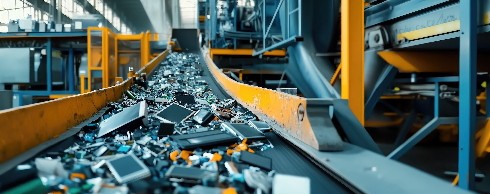

Electronic recycling Connecticut businesses and organizations rely on High Tide Commodities Management for certified e-waste disposal services. With over 25 years of experience, we provide responsible, environmentally compliant recycling solutions for all types of electronic equipment, ensuring your outdated technology is processed safely and sustainably in accordance with EPA e-waste recycling guidelines.
Electronics We Accept
Our electronic recycling Connecticut services handle a comprehensive range of IT equipment and consumer electronics:
- Desktop computers, laptops, and tablets
- Servers, rack systems, and networking equipment
- Monitors, displays, and televisions
- Printers, copiers, scanners, and peripherals
- Smartphones and mobile devices
- Cables, keyboards, mice, and accessories
- UPS systems, batteries, and power supplies
- Telecom equipment and phone systems
Our E-Waste Recycling Process
High Tide follows a comprehensive recycling process that maximizes material recovery while protecting the environment. Every piece of equipment goes through a carefully managed workflow:
- Collection and inventory: We catalog all items with serial numbers and asset tags for full traceability
- Data security: All storage devices undergo certified data destruction before any recycling takes place
- Sorting and dismantling: Equipment is separated into recyclable material streams including metals, plastics, and circuit boards
- Hazardous material handling: Batteries, CRT glass, mercury-containing lamps, and other hazardous components are processed according to Connecticut DEEP regulations
- Material recovery: Valuable materials like copper, aluminum, gold, and palladium are recovered for reuse
- Documentation: You receive certificates of recycling and destruction for your compliance records
Environmental Compliance
Our electronic recycling Connecticut services meet all federal, state, and local environmental requirements. We adhere to R2 (Responsible Recycling) standards and ensure that no e-waste is exported to developing countries or sent to landfills. High Tide is committed to responsible downstream processing, meaning every component is tracked through the entire recycling chain.
Connecticut E-Waste Regulations
Connecticut has strict e-waste disposal laws that prohibit businesses from disposing of certain electronics in regular waste streams. Computers, monitors, printers, and televisions must be recycled through approved channels. High Tide ensures your organization stays compliant with all Connecticut Department of Energy and Environmental Protection (DEEP) requirements, protecting you from potential fines and liability.
Business E-Waste Solutions
Whether you're upgrading your office technology, refreshing a department, or decommissioning an entire data center, we offer scalable electronic recycling solutions tailored to your needs. Our team handles logistics, scheduling, pickup, and transportation, making the process seamless for your organization. We serve businesses throughout Connecticut, from small offices to large enterprises.
Value Recovery Through Remarketing
Not all retired electronics need to be recycled. Equipment that still has useful life can be refurbished and remarketed through our IT asset disposition program, generating revenue that offsets your recycling costs. Our team evaluates every asset to determine whether recycling or remarketing provides the best outcome for your organization and the environment.
The Environmental Impact of E-Waste

Electronic waste is one of the fastest-growing waste streams worldwide. Improperly disposed electronics can leach lead, mercury, cadmium, and other toxic substances into soil and groundwater. By choosing professional electronic recycling Connecticut services from High Tide, your organization actively contributes to reducing landfill waste, conserving natural resources through material recovery, and preventing hazardous contamination in our communities. Every device recycled responsibly is a step toward a cleaner Connecticut.
Why Choose High Tide for Electronic Recycling?
Connecticut businesses choose High Tide Commodities Management for electronic recycling because we deliver:
- Over 25 years of industry expertise in e-waste management
- Certified data security on all storage devices before recycling
- Full environmental compliance with state and federal regulations
- Transparent chain-of-custody documentation from pickup to processing
- Flexible scheduling with on-site pickup throughout Connecticut
- Zero-landfill commitment for all processed materials
Contact us today to schedule your electronic recycling pickup or request a free quote for your Connecticut business. Call (203) 687-9370 to speak with our team.